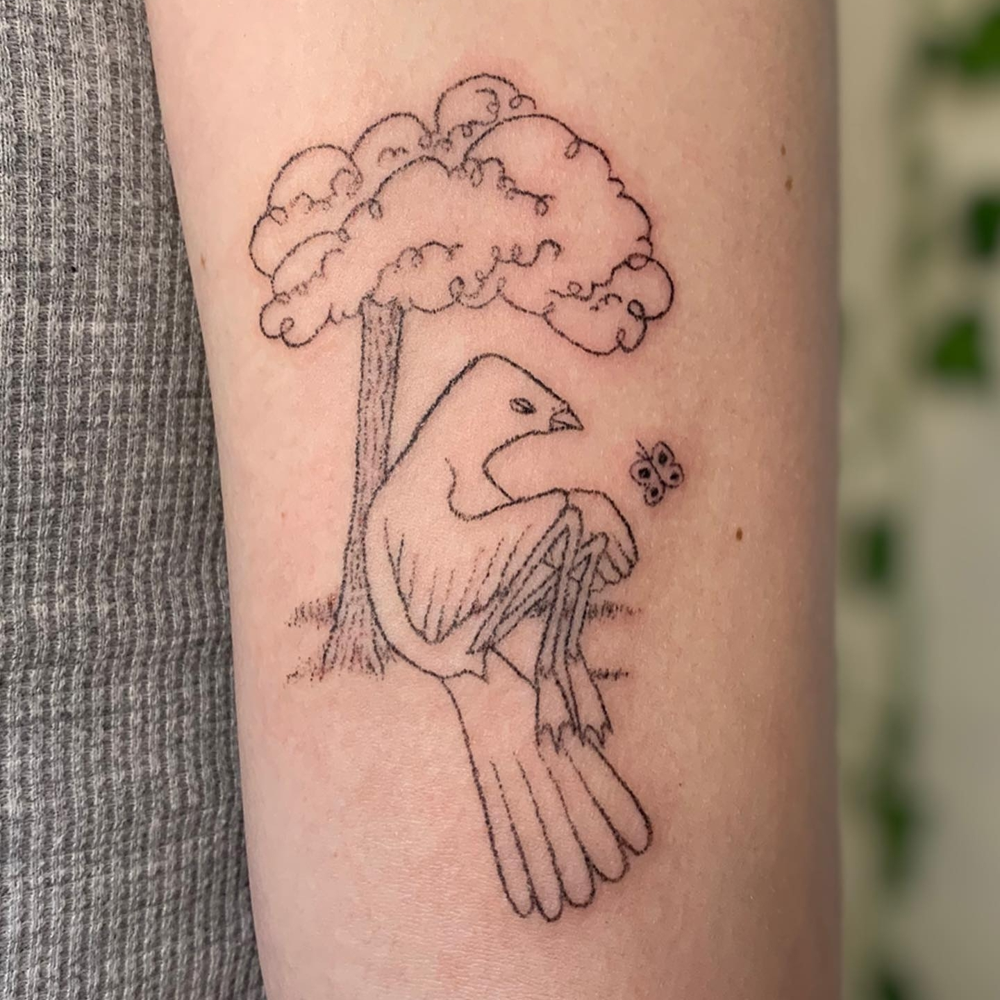
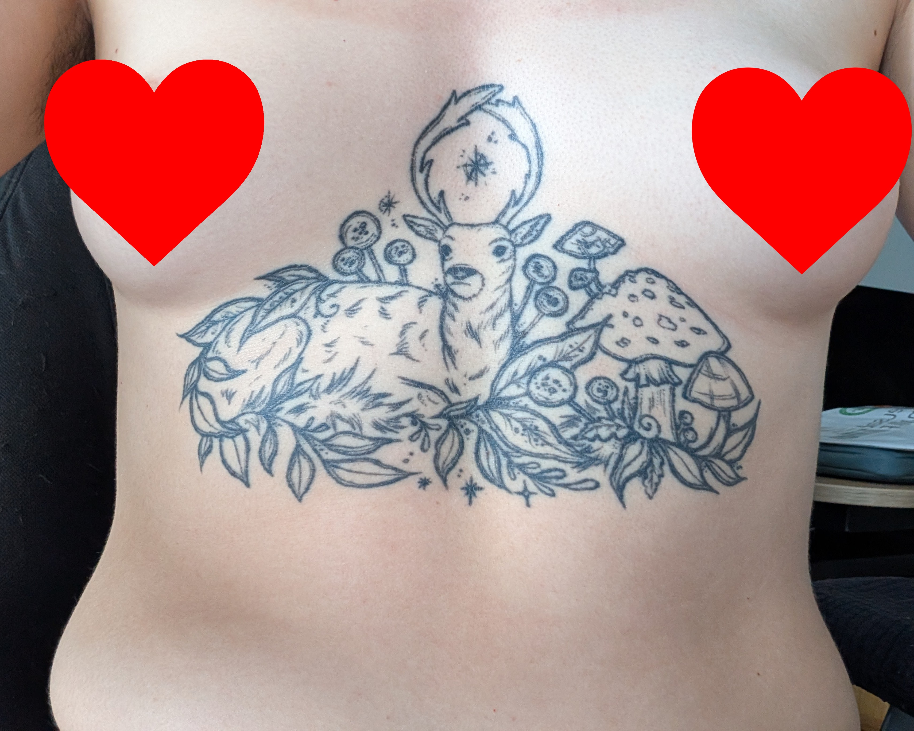
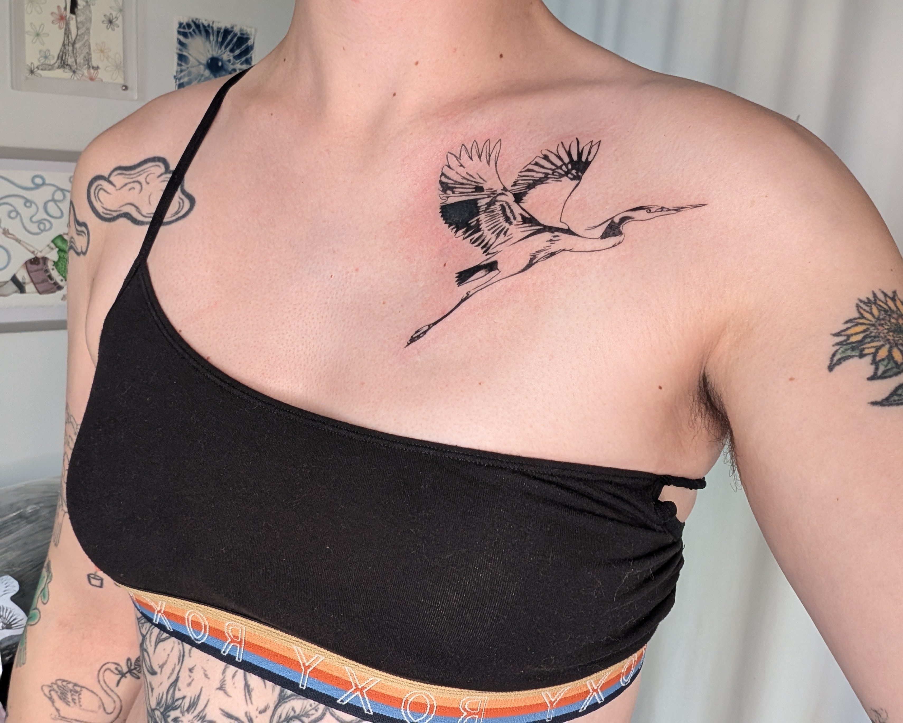

August 31, 2026
Mara Solen
I got my 30th tattoo this month! It's a heron, and it's on the right side of my chest. I didn't actually realize I had 30, I just thought that I had a lot and I wanted to explain them to people more. It was only when I started making this visualization that I realized there are 30.
The thing I always have to explain is the layout of my tattoos. I, like many others that I know, have a patchword tattoo style, meaning that I have lots of individual tattoos. A lot of them are from different artists and are in somewhat different styles. The thing that brings them all together is the layout. I decided at the start that I wanted my tattoos to make my body look like a sketched/cartoon world full of animals and plants. My body is split into different sections, with each section representing a biome. The point just below my elbow level is where creatures that live on the surface of the water live. Below that, everything is underwater, and I plan to add some that are underground on my feet and ankles. Just above that, near the elbow, is the land biome. From about halfway between my elbow and my shoulder upwards is the sky, which only contains creatures that are very tall or are flying.

My first tattoo

My biggest tattoo

My most recent tattoo
This visualization shows approximately where each tattoo is on my body, and how that relates to the biome it is in. It also has pictures of all of my tattoos ringed around the visualization in the order that I got them, and you can see what year I got each tattoo in based on the colour of the circle as well. You can see that I started with lots of animals on my left arm (the visualization is me facing outwards, so it is mirrored) as well as my reindeer chest tattoo. Then, I did most of my right arm, then went further outwards with my right leg and the right side of my chest.